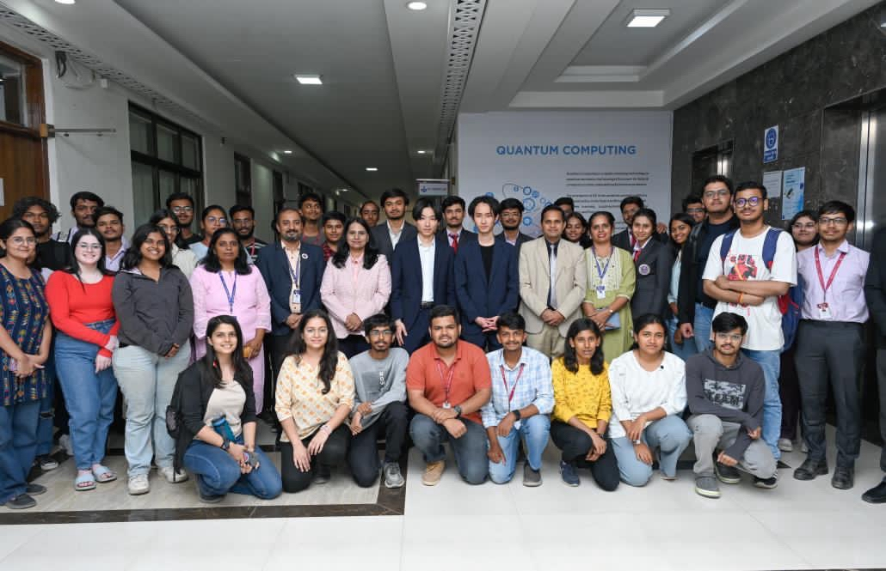

Human Resource

コミュニケーションの品質
- 日本語能力試験におけるN2ランク以上の日本語能力を保有するブリッジコミュニケータをご用意
- オンサイトとオフショアの橋渡し役を経験済であり、日本語能力を保有したエンジニアのアサインも可能
- 派遣期間にて貴社での業務理解を深めた後正社員雇用への転換も可能
アサインエンジニアの質
- インドPune市のIT4大学と連携した、アプローチ可能エンジニア母集団の拡大
- ベンダー部門、ユーザ部門、双方の実務経験ベースに判断するプロジェクト遂行可能エンジニアの選抜
- Shreya氏による採用可能エンジニア母集団形成の実施
- 経験豊富なシニアアドバイザーによるアサイン対象エンジニアの選抜を実施

Development Setup Assistance
インド現地での物品調達サポート
ローカルマーケットにおける価格交渉の難しさインドにおいては価格の透明性が低く、特に外国企業に対しては相場以上の価格を提示されることも少なくありません。さらに、商習慣や言語の違いといった要因も加わり、適正価格での調達を実現するには、現地に精通した高度な知識と信頼関係に基づく交渉力が求められます。